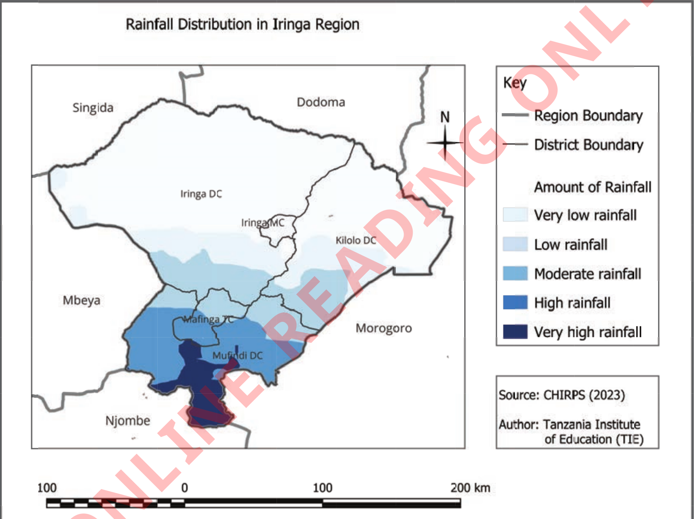
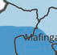
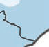
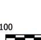
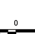
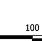

They illustrate elements of weather such as temperature, rainfall, wind, humidity, and atmospheric pressure, and how they differ from one place to another. These maps are important for farming, business, tourism, and transportation activities. Figure 5 shows rainfall distribution in Iringa region.






Figure 5: Rainfall distribution in Iringa Region
Urban planning maps
These maps show the planning of towns, cities and villages for settlement and social services. For example the placement of houses, shops, schools, hospitals, and roads as shown in Figure 6. These maps are mostly used by land surveyors and urban planning officers.